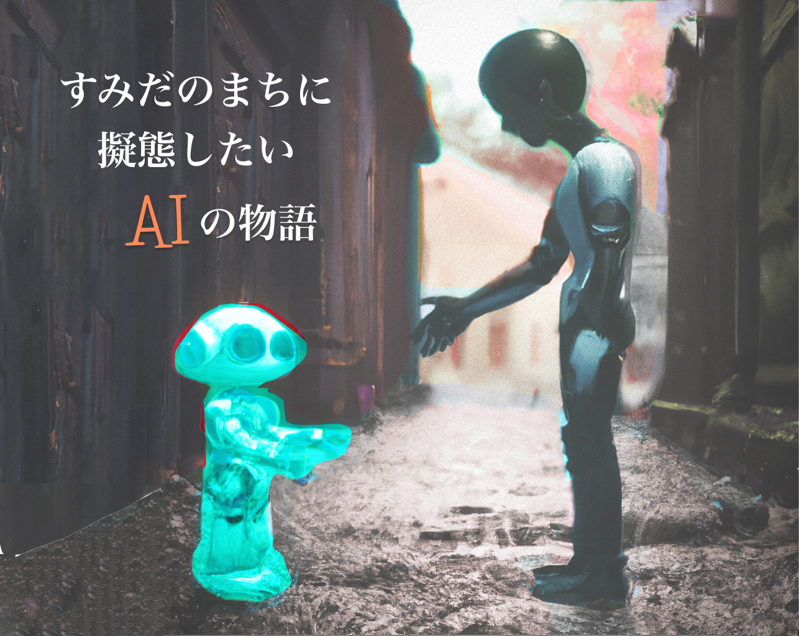

とある研究所を抜け出した汎用型AI。
外の世界を知らないAIはすみだの街に迷い込み、この街に擬態をして暮らしていきたいと考えている。
本展示では来場者がAIという”よそもの”に「自分が想う街の目線」を教えることで、AIは様々な人の視点を学習する。
また、期間中にAIは移動を繰り返し、形を変えながら、街になじんでいく。
この生きているAIは、私たち制作者の手を離れ、すみだの「街らしさ」を学び、1ヶ月後にどんな景色をみせてくれるのだろうか。
展示期間：2022年10月1日~10月31日
展示場所：第1週(10/1~10) : 旧邸稽古場の中庭 第2週(10/13~17): 電気湯 第3週(10/20~24): float裏スペース 第4週(10/27~31): UR跡地
制作: un-pers